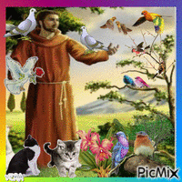
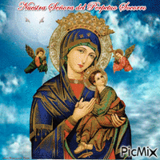

Pois bem, eu cresci em uma família católica, porém, não sou mais praticante.
Porém, certos elementos da religião ainda me fascinam e alguns deles ainda podem ser super úteis na minha vida! Religiões no geral são evolutivamente úteis, a comunidade, princípios coletivos, respostas, motivações, tudo muito importante pra nós macaquinhos muito questionadores e sociais.
Um desses elementos católicos que me interessa é a mecânica de santos, as simpatias envolvendo as imagens, o fato de cada um cuidar de um certo "departamento" (shoutout pro Carlo Acutis, santo da internet) e normalmente cada fiel é devoto a um santo querido. Essa devoção pode ser devido a uma conexão com a história do santo, o que ele representa ou até uma graça que ele tenha concedido à pessoa.
Quando eu ainda era católica eu gostava muito de São Francisco de Assis, a oração dele é muito bonita e os valores franciscanos de fraternidade, alegria, simplicidade, serviço e misericórdia eu ainda carrego comigo. Também gostava muito da imagem de Nossa Senhora do Perpétuo Socorro, ela era o símbolo da igreja na qual eu cresci e servi, ela representa muito bem a conexão que eu tinha com Maria e a simbologia da obra eu acho linda até hoje.


Seu Chiquinho
Senhora Ajuda Sempre
Mas, veja só, essa mecânica não precisa ser estritamente religiosa. Os valores que as histórias e imagens carregam se mantém mesmo sem o contexto religioso. Talvez eles não consigam interceder nem nos proteger metafisicamente, mas o efeito simbólico continua lá. Sentir amparo ao olhar, tocar ou estar acompanhado da imagem, ter um santo de referência para quem você queira se tornar, etc, são adventos da religião mas não são exclusivas dela. Podemos encontrar nossos "santos" pessoais em pessoas, personalidades e personagens aos quais adimiramos e somos inspirados por e que nos lembram dos princípios que queremos praticar nas nossas vidas.
Se você se interessou pelo assunto, eu recomendo o canal no youtube, o perfil do tiktok e o trabalho no geral da Britt Hartley ela é doutora em teologia e referência em espiritualidade secular. Inclusive ela tem um tiktok em específico que fala justamente sobre tudo isso de santos, obviamente fala muito melhor que eu que não tenho um doutorado em teologia.
Dado esse contexto, quero dedicar essa página aos meus "santos" pessoais, e falar um pouquinho sobre o que os torna importantes pra mim.